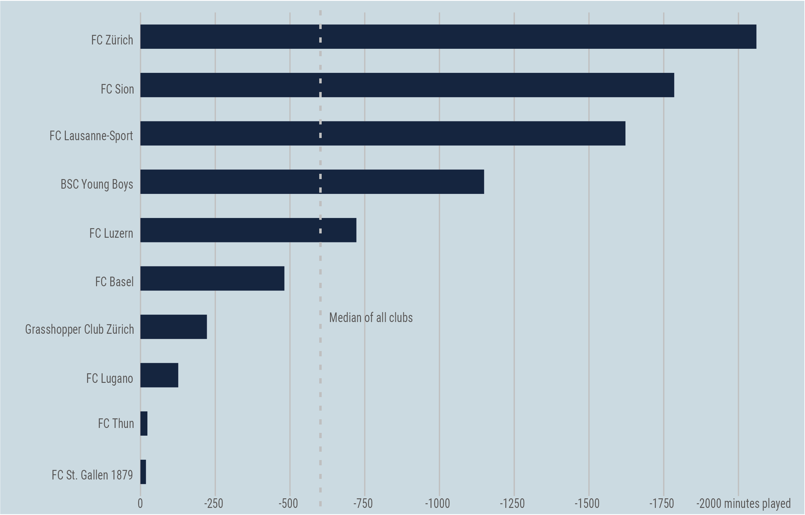
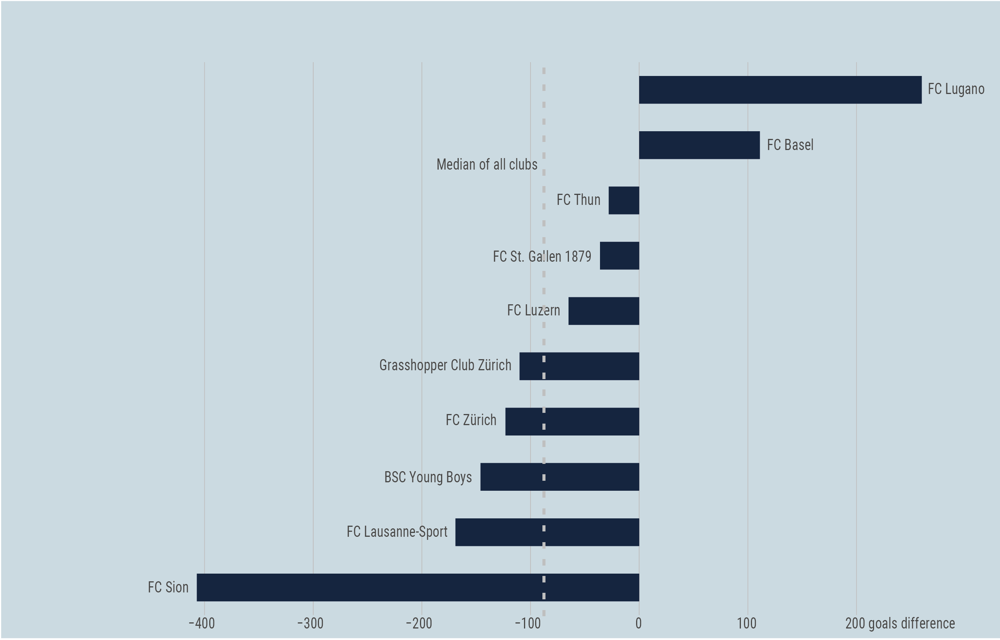
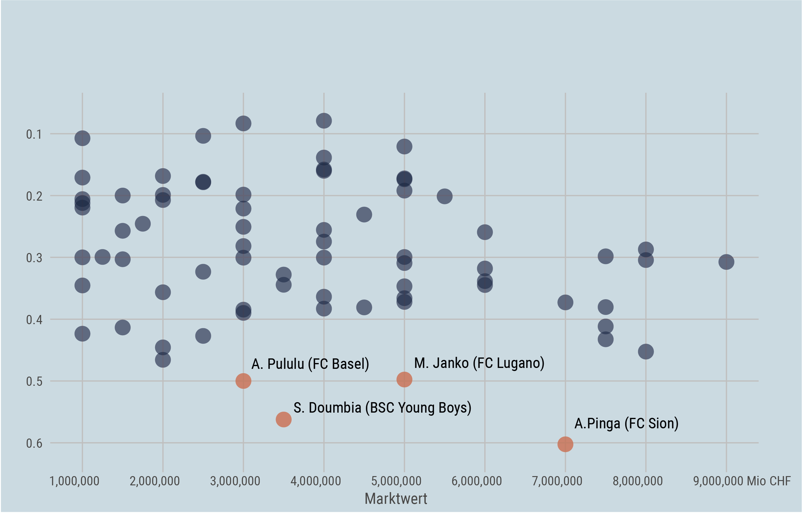
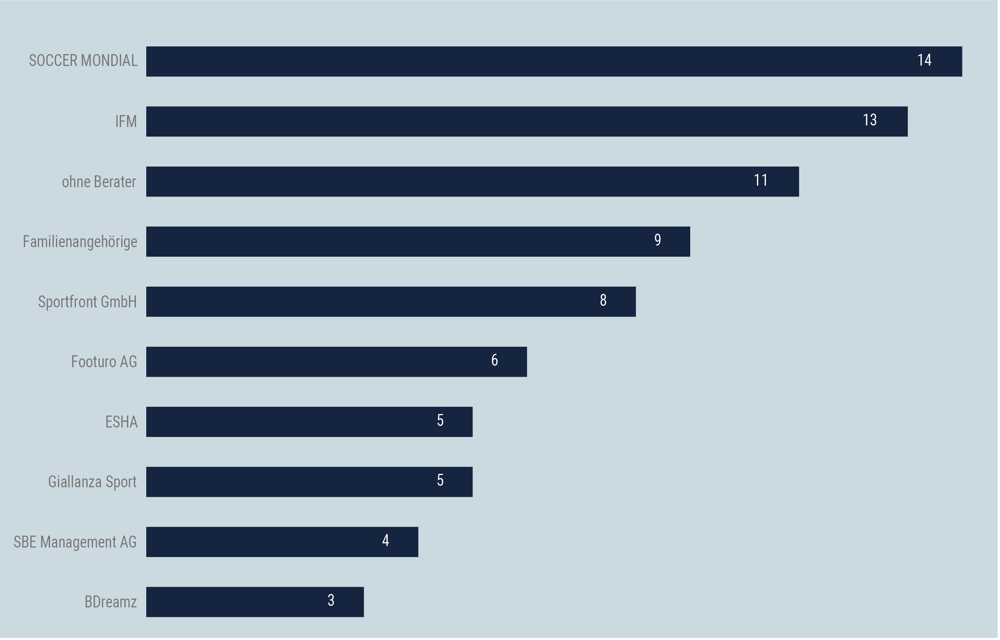

Swiss Football League
BY Benjamin Bitoun
Published July27, 2018
The new season in the Swiss Football League will kick off Saturday evening. The window is still open and therefore more ins and outs are to be expected. Clubs like the champion Berne will almost surely loose some of last seasons star ensemlbe to big name clubs in Europe. But how did your team do so far on the transfer market? Here are our five takeaways from this summers transfer window:
1. It's a young man's game
We looked at each transfer individually and checked how many professional game that player played in his career. Then we calculated the difference of total game minutes played between the ins and outs. The verdict: All clubs lost game experience during the summer.
Clubs go with Youth over Experience
Total difference in game experience (in minutes) between the players in and the ones that left
NOTE: Data analysis includes loaned players.
SOURCE: TRANSFERMARKT
All the clubs got rid of or lost some experienced players this summer. The gaps in the lineup were filled with younger and less experienced players. The data shows: There's a youth movement going on.
Lost firepower: The new players have scored less goals than the ones that left
Total difference of career goals between the players in and out
NOTE: Data analysis includes loaned players.
SOURCE: TRANSFERMARKT
2. Money doesn't necessarily buy you goals
In order to make up for the loss of goal scoring some teams opened up their wallets and brought in some expensive strikers with a high market value. But a closer look at the player data suggests that it is not always "the more expensive the better" when it comes to soccer players. One fact becomes obvious when looking at their goal ratio compared to their market value: Some of them are grossly overpaid.
The most valuable strikers versus the overpaid ones
Goal ratio (goals per game) compared to the market value of the transfered striker
NOTE: The higher to goal ratio the better. Ratio 1 would be 1 goal for each game played.
SOURCE: TRANSFERMARKET
3. The ultimative transfer winner is: The Player Agent
Soccer stars are some the highest-paid athletes in Switzerland, and their agents are basically free to charge whatever commission they want (the standard is around 10%). Some of the agents that brokered most of the deals this summer have been able to build sprawling practices, representing players not only in Switzerland but across multiple leagues, most notably England's Premier League, La Liga of Spain and Germany's Bundesliga. Here are the biggest names in the business:
Ranking the most active Agents in Swiss Football
Number of deals brokered by Player Agent
NOTE: Data contains only transfers in the highest league.
SOURCE: TRANSFERMARKET